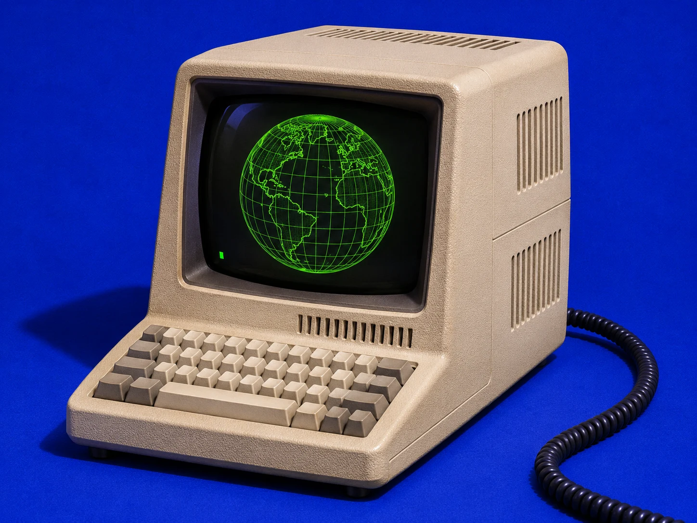
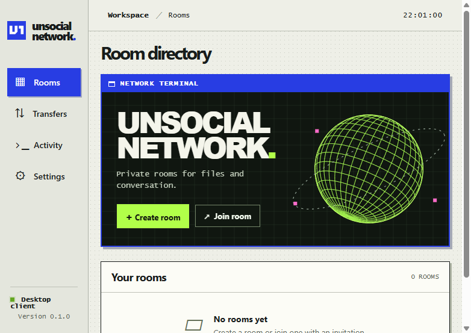

Desktop release candidate / v{{version}}
A room for
your files.
Open a private room on your desktop. Invite someone to chat and share files of any type.
Choose a download
Get the app.
Choose your operating system. Each portable ZIP includes the desktop client and room service.
Unsigned release candidate. SHA-256 checksums
Your first room.
Open the desktop app
Extract the full archive on each computer. Both desktops need a network route to the room host.
Share an invitation
Choose Create room and send its invitation privately. Your guest pastes it into Join room.
Drop in a file
Drag a file into the room. Guests choose what to download, and Transfers shows progress and verification. Keep the host app running.
